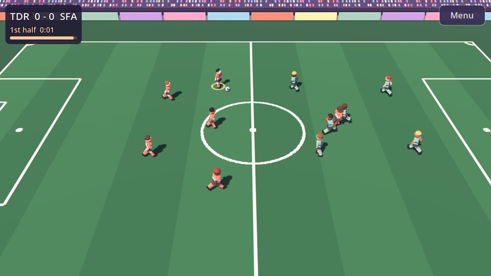
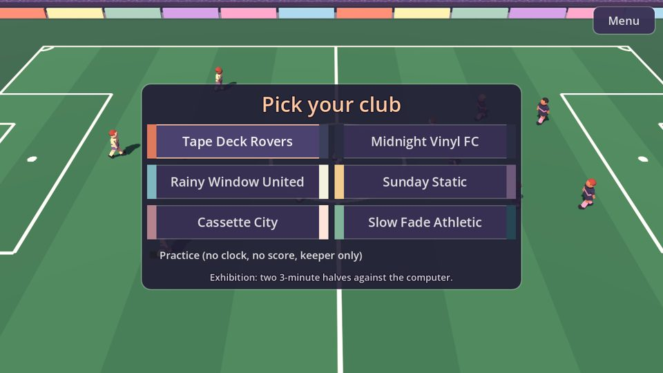

Lo-Fi League
Laid-back 7 a side soccer
Pass, shoot and take it easy. Pick one of six fictional clubs and play a relaxed match against the computer under a sunset sky, with lo-fi beats in the background.
Version 0.1.1. New: the Android app is signed with the real key. If you installed 0.1.0, uninstall it first. Release notes · Backlog · Source on GitHub



What kind of game is this?
Pick up and play. Move, pass, shoot and tackle. Two 3-minute halves make a match of about 6 minutes.
Laid-back mood. Lo-fi music, soft colors and friendly tackles. No injuries and no red cards.
Rules you know. Kickoffs, throw-ins, corners, goal kicks and goals. Computer keepers on both sides.
Things to do
- Play an exhibition match with any of six clubs: Tape Deck Rovers, Midnight Vinyl FC, Rainy Window United, Sunday Static, Cassette City and Slow Fade Athletic.
- Thread passes and take over the player who receives them.
- Hold the shot button for power and aim for a corner.
- Practice your finishing against just a keeper, with no clock.
- Build your win, draw and loss record. It saves on your device.
Controls
Keyboard
WASD or arrows move. Space passes or switches player. F shoots or tackles (hold for power). Shift sprints. Esc opens Menu.
WASD or arrows move. Space passes or switches player. F shoots or tackles (hold for power). Shift sprints. Esc opens Menu.
Controller
Left stick moves. A passes or switches. X shoots or tackles. RT sprints. Back opens Menu.
Left stick moves. A passes or switches. X shoots or tackles. RT sprints. Back opens Menu.
Touch
Drag on the left half to move. Pass, Shoot and Sprint buttons on the right. Menu at the top right.
Drag on the left half to move. Pass, Shoot and Sprint buttons on the right. Menu at the top right.
Install on Android
- Tap Download for Android on this page.
- Open the file. Allow installs from your browser if your phone asks.
- Tap Install, then Open.
- If you installed version 0.1.0, uninstall it first. It used a test signature. Later versions install over 0.1.1.
Feedback
Tell Brian what you think. Useful things to note:
- How the passing, shooting and tackling feel.
- Whether the computer is too easy or too hard.
- Anything that looks wrong, with a screenshot.
- Your phone or browser.